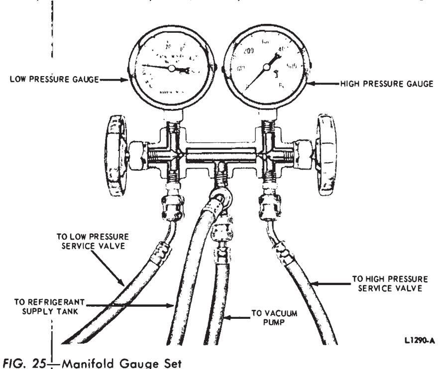
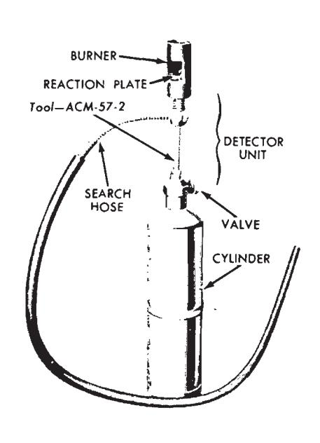
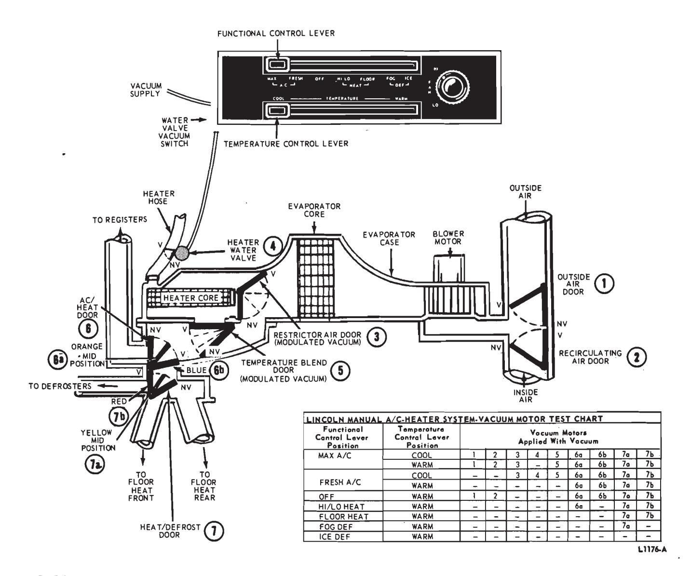
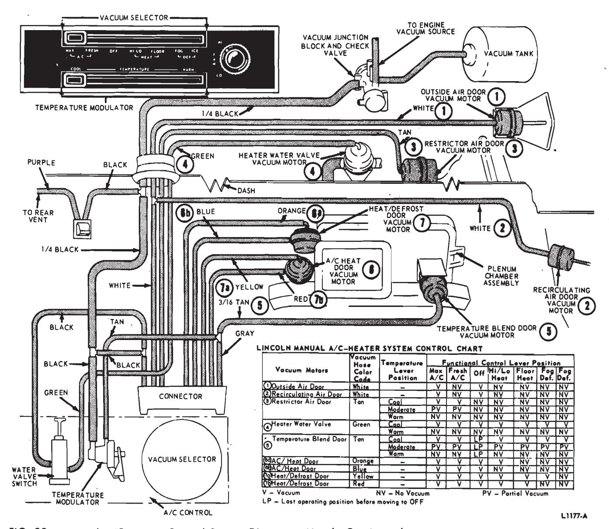

Air Conditioning Systems · 34-04-24a
Obstructed air passages, broken belts, disconnected or broken wires, loose clutch, loose or broken mounting brackets may be determined by visual inspection of the parts.
Air Conditioner Performance Test—Falcon, Fairlane, and Montego
The performance level of the air conditioning system can be checked after performing diagnostic checks and repairs to determine if the system is operating to specifications. The performance level chart (Fig. 24) indicates the maximum desirable discharge air temperature in relation to the ambient (surrounding) air temperature and relative humidity.
The performance level check must be performed under the following test conditions.
-
Connect the manifold gauge set to the compressor service valves.
(Refer to Checking System Pressures in this section).
-
Install a motor driven psychrometer (humidity indicator) at the fresh air intake.
-
Install a dry bulb thermometer at the center air outlet register (Weston Model 2261 or equivalent).
-
Operate the engine at 1500 rpm with the transmission in Part (automatic transmission) or neutral (manual transmission).
-
Set the A/C controls for fresh air operation and the blower on high speed.
-
Close the hood and open the front doors of the vehicle.
-
Perform the test with no sun load (in shade) and no wind.
-
Allow the discharge air temperature to stabilize. Record the relative humidity, ambient (surrounding) air temperature, discharge air temperature, and suction and head pressure. Compare the readings to those shown in Fig. 24. Temperatures above those shown in Fig. 24 indicate additional system diagnosis is required.
Compréssor Test
Attach the manifold gauge set (Fig. 25). It will not be necessary to attach the Refrigerant-12 tank or the vacuum. Set both manifold gauge valves at the maximum clockwise, or closed, position. Close the suction service valve (maximum clockwise position).
Operate the engine at 1500 rpm. Set the air conditioner controls for maximum cooling to engage the compressor clutch. The suction gauge should read 20 inches of vacuum within 30 seconds. Disengage the clutch by setting the air conditioner controls to OFF. The suction gauge should remain below zero psi for at least one minute.
If the compressor does not satisfy these two conditions after at least 3 cycles of clutch engagement, the compressor has either a blown head gasket or leaking valves. Remove the head and inspect the valve plate and gaskets for damage. Replace parts if necessary. Replace a compressor if the cylinder walls are scored or pieces of metal are imbedded in the pistons.
Checking for Leaks
Attach the manifold gauge set (Fig. 25). Leave both manifold gauge valves at the maximum clockwise position. Set both service valves at the center position. Both gauges should not show approximately 60 to 80 pounds pressure at 75 degrees F. If very little or no pressure is indicated, leave the vacuum pump valve closed, open the Refrigerant-12 tank valve, and set the low pressure manifold gauge valve to the counterclockwise position. This opens the system to tank pressure. Check all connections, and the compressor shaft seal for leaks, using a flame-type leak detector (Fig. 26). Follow the directions with the leak detector. The smaller the flame the more sensitive it is to leaks. Therefore, to insure accurate leak indication keep the flame as small as possible. The copper element must be red hot. If it is burned away, replace the element. Hold the open end of the hose at each suspected leak point for two or three seconds. The flame will normally be almost colorless. The slightest leak will be indicated by a bright green blue color to the flame. Be sure to check the manifold gauge set and hoses for leaks as well as the rest of the system.

Fig. 26 — Torch Type Leak Detector

If the surrounding air is contaminated with refrigerant gas, the leak detector will indicate this gas all the time. Good ventilation is necessary to prevent this situation. A fan, even in a well ventilated area, is very helpful in removing small traces of refrigerant vapor.
Use of Sight Glass
Clean the sight glass before checking for a proper charge of refrigerant. Then, observe the sight glass for bubbles with the engine running at 1500 rpm and the A/C controls set at maximum cooling. Bubbles in the sight glass indicate an undercharge of refrigerant. If an undercharge of refrigerant is found, check the system for leaks. Repair any leaks, evacuate the system, and charge the system with the proper amount of Refrigerant-12.
No bubbles in the sight glass indicate either a full charge of refrigerant or a complete loss of refrigerant. While observing the sight glass, cycle the magnetic clutch off and on, with the engine running at 1500 rpm. During the time the clutch is off, bubbles will appear if refrigerant is in the system and will disappear when the clutch is on. If no bubbles appear during the on and off cycle of the magnetic clutch, there is no refrigerant in the system. If there is no refrigerant in the system, it will be necessary to leak test, repair as required, and charge the system. Under conditions of extremely high temperatures, occasional foam or bubbles may appear in the sight glass.
Checking System Pressures
The pressures developed on the high pressure and lower pressure side of the compressor indicate whether or not the system is operating properly.
Attach the manifold gauge set (Fig. 25). It will not be necessary to attach the Refrigerant-12 tank unless refrigerant is to be added to the system. Set both manifold gauge valves at the maximum clockwise, or closed, position. Set both service valves at the center position.
Check the system pressures with the engine running at 1500 rpm, all controls set for maximum cooling, and the front of the car at least 5 feet from any wall.
The actual pressures indicated on the gauges will depend on the temperature of the surrounding air and the humidity. Higher air temperatures along with high humidity, will give higher system pressures. The lowest figures given are for an ambient (surrounding air) temperature of 75 degrees F., 50 percent relative humidity.
The low pressure gauge should indicate a pressure of from 12-50 psi. The high pressure gauge should indicate a pressure of 120-300 psi.
At idle speed and a surrounding air temperature of 100 degrees - 110 degrees F., the high pressure may go as high as 300 pounds or more. If it becomes necessary to operate the air conditioner under these conditions, keep the high pressure down with a fan directed at the condenser and radiator.
Interpreting Abnormal System Pressures
Low Pressure Below Normal, High Pressure Normal
These pressures indicate a low charge or a restriction between the receiver and the expansion valve or between the expansion valve and the low pressure service valve. If the low pressure is actually a vacuum, the expansion valve is probably closed tightly. Check the expansion valve and replace it if required.
Check the system between the receiver outlet and the expansion valve for restrictions, by feeling all of the connections and components. Any portion that is cold to the touch or that frosts up, with the pressures as indicated here, is restricting the refrigerant flow.
Low Pressure Above Normal, High Pressure Normal
Check the heater water valve (4) to be sure that it is closed. Operate the system on MAX A/C and be sure that the outside air door (1) is closed.
High Pressure Below Normal, Low Pressure Above Normal
If the two pressures are equal or within 30 pounds of each other, the compressor may not be operating properly. Perform the compressor test. Repair or replace the compressor as needed.
High Pressure Above Normal
High compressor head pressures are caused by an overcharge of refrigerant, condenser air passages clogged, a restriction between the condenser inlet and the receiver, or high surrounding air temperatures. Check the condenser fins for dirt or insects and clean as required. If the high pressure is still excessive, discharge the system through the discharge service valve. Check for a restricted condenser or a restriction between the condenser and the receiver. Evacuate the system and charge with the specified amount of Refrigerant 12.
Thermostatic (ICING) Switch Test
Fill a container with crushed ice, salt and water. Put enough salt in the water so that the temperature of the solution is 25 degrees F. or lower.

Fig. 27 — Manual A/C-Heater Blend Air System Schematic—Lincoln Continental
Use a self-powered test light or ohmmeter connected to the switch terminals to check whether or not the switch is closed.
Place the sensing tube in the ice, salt and water solution. The thermostatic (icing) switch contact points should open and remain open while the tube is in the solution.
Remove the sensing tube from the solution. As the tube warms up, the switch contacts should close. An ohmmeter check of the contacts should show a resistance of less than an ohm. If a resistance of one ohm or more occurs, replace the switch. Make certain that no salt water gets into the control. If the control fails to function as outlined, it must be replaced.
Receiver—Dryer Test
Operate the air conditioner for about five minutes; then, slowly move your hand across the length of the unit from one end to the other. There should be no noticeable difference in temperature. If cold spots are felt, it indicates that the unit is restricting the refrigerant flow, and the receiver-dryer must be replaced.
Magnetic Clutch Test
Disconnect the magnetic clutch wire at the bullet connector, and connect it to the negative lead of an ammeter. Connect the positive lead of the ammeter to the battery positive terminal. The magnetic clutch should pull in with a distinct click and the current reading on the ammeter should be to specification.
Blower Motor Test—Except Lincoln Continental
Disconnect the blower motor wire at the bullet connector, and connect it to the negative lead of an ammeter. Connect the positive lead of the ammeter to the battery positive terminal. The motor should operate and the reading on the ammeter should be to specification.
Functional and Temperature Lever Tests— Lincoln Continental
The test chart in Fig. 27 will deter- mine which vacuum motor should be functioning with applied vacuum during the various functional lever and temperature control lever positions at the manual AC/Heater system control assembly on the instrument panel. Check for proper operation by following the charts (Figs. 27 and 28) along with the descriptions that follow:

Fig. 28 — Manual A/C-Heater Control System Diagram—Lincoln Continental
Each vacuum control motor, and the door or valve it operates, has been assigned a code number and name that relates directly to its application in the system as follows:
- (1) Outside Air Door
- (2) Recirculating Air Door
- (3) Restrictor Air Door
- (4) Heater Water Valve
- (5) Temperature Blend Door
- (6) AC/Heat Door
(7) Heat/Defrost Door
The Outside Air Door (1) vacuum motor arm will travel its full length, closing the Outside Air Door (1), when vacuum is applied.
The Recirculating Air Door (2) vacuum motor arm will travel its full length, opening the Recirculating Air Door (2) when vacuum is applied.
A modulated vacuum from the temperature regulator valve (Figs. 27 and 28) is supplied to the Restrictor Air Door (3) and Temperature Blend Door (5). The amount of vacuum increases as the temperature control lever is moved toward the COOL position. The Restrictor Air Door (3) will block the air going to the heater core and the Temperature Blend Door (5) will block the air coming from the heater core when maximum vacuum is attained.
When vacuum is applied to the Heater Water Valve (4) vacuum motor, the valve will close cutting off the water flow to the heater core.
Where two vacuum lines are used to control one vacuum motor (AC/Heat (6) and Heat/Defrost (7) Doors) the top vacuum line (a) will move the arm of the motor to the mid or half-way position. Vacuum must also be applied to the side vacuum line (b) to move the arm to the full vacuum position.
Control Lever Operation
Temperature Control Lever
With the temperature control lever (lower) in COOL position, the Restrictor Air Door (3) and Temperature Blend Door (5) restrict the passage of air through the heater core (vacuum). the Heater Water Valve (4) is closed (vacuum) and cool air is discharged through the registers, floor outlets or defrosters. As the lever is moved toward WARM the water valve vacuum switch is released and the Heater Water Valve (4) is opened (no vacuum), the Restrictor Air Door (3) and Temperature Blend Door (5) vacuum motors are modulated (partial vacuum) allowing air through the heater core to be mixed with cool air and discharged through the plenum outlets. In the WARM position (no vacuum), all air passes through the heater core to provide maximum discharge air temperature. Refer to Figs. 27 and 28.
Functional Control Lever
In MAX A/C-COOL control positions, air is drawn into the system by the blower from inside the vehicle through the Recirculating Air Door (2) (Vacuum) in the right cowl side panel and the Outside Air Door (1) in the cowl air intake is closed (vacuum). The air is then forced through the evaporator core, the Restrictor Air Door (3) closes off air through the heater core (vacuum), the Temperature Blend Door (5) is in the maximum cool position (Full vacuum), and all air by-passes the heater core, and the water valve is off (vacuum). The AC/Heat Door (6) is in the fully closed position (6a and 6b vacuum) and cooled air is discharged through the four registers. Refer to Fig. 27.
In FRESH A/C-COOL control positions outside air is drawn into the system through the Outside Air Door (1) (no vacuum), the Recirculating Air Door (2) is closed (no vacuum) and all the other doors are in the same position as in MAX A/C-COOL.
In the OFF position the blower is off, the Outside Air Door (1) is closed (vacuum) and no air is drawn into the system.
In HI/LO HEAT control position the Outside Air Door (1) is open (no vacuum), the Recirculating Air Door (2) is closed (no vacuum) and the heater core Restrictor Air Door (3) is in the heat position (open-no vacuum). Warmed air through the heater core is then mixed with cool air that by-passes the core in proportion to the control setting of the Temperature Blend Door (5). With the AC/Heat Door (6) in mid-position (6a vacuum) and the Heat/Defrost Door (7) is fully closed (7a and 7b vacuum) air is discharged equally through the registers and floor outlets.
In FLOOR HEAT-WARM control positions the Outside Air Door (1), Recirculating Air Door (2) and Restrictor Door (3) are in the same position as in HI/LO HEAT position with no vacuum. The Temperature Blend Door (5) is in the maximum heat position (no vacuum), the AC/Heat Door (6) is in the heat position (no vacuum), the Heat/Defrost Door (7) is fully closed (7a and 7b vacuum), and heated air is discharged through the floor outlets and through the rear seat heat ducts.
In DEFOG position the Outside Air Door (1), Recirculating Air Door
(2), Restrictor Air Door (3) and AC/Heat Door (6) are in the same position as in HI/LO HEAT position with no vacuum. The Heat/Defrost Door (7) is in a mid-position (7a vacuum) and warmed air is discharged both through the defrosters and floor outlets with air temperature in proportion to the control setting for the Temperature Blend Door (5).
In DEICE-WARM position all doors remain in the same position as in DEFOG position except the Temperature Blend Door (5) is in maximum heat position (no vacuum) and the Heat/Defrost Door (7) is in defrost position (no vacuum) and all of the heated air is discharged through the defrosters to the windshield, with only a small bleed to the floor.
Blower Motor Controls
Refer to Standard Heater System, Group 34-03.
A/C Thermostat (AMBIENT) Switch
The A/C thermostat (ambient) switch, located on the left center grille support is a normally closed snap action electrical switch that controls the compressor clutch operation. It receives electrical current from the A/C clutch (Micro) switch located in the Manual A/C-Heater Control Assembly (Fig. 13) when the functional control lever (top) is in any position except OFF. The ambient switch cuts in, allowing the clutch to operate, at approximately 55 degrees F. and cuts out, disengaging the clutch, at approximately 35 degrees F.
 Fig. 13 — Manual A/C-Heater Control Assembly—Lincoln Continental
Fig. 13 — Manual A/C-Heater Control Assembly—Lincoln Continental